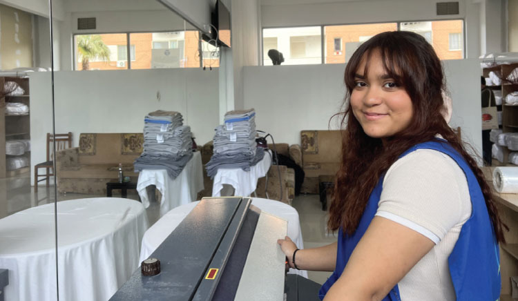

Интеграцията на представителите на ромската общност в пазара на труда остава ключово предизвикателство както за България, така и за Европейския съюз, за което сдружение „Ръка за ръка 8“ работи с повишено внимание. Ромите представляват значителна част от населението на страната, въпреки сериозни различия в броя цитирани от различни изследвания. Според актуалните данни за етническия състав на населението, базирани на последното преброяване на населението от 2021, самоопределящите се като роми в България намаляват. През 2021 година само 4.4% или 266 720 души са се определили като роми, а през 2011 те са били близо 4.9% или 325 343. Това означава спад с 0,5%. Причина за спада на самоопределилите се като роми, от една страна, е по-интензивната мобилност и емиграция на населението като цяло, и на ромите в частност. Над половината от намаляването на населението след 2007 г. се дължи на външна миграция, особено в рамките на ЕС. Много от ромите, но също така и много от етническите българи и другите малцинства търсят препитание извън страната. Ниското образование, социалната изолация и ограничените възможности за професионална квалификация са основни фактори, които водят до по-ниска заетост сред ромската общност. Данни показват, че приблизително 43% от ромите в България са заети, което е по-ниско от средното равнище на заетост в страната. Особено уязвими групи в рамките на общността са младежите и жените, които често се сблъскват с двойна или множествена дискриминация – както на етническа, така и на социално-икономическа основа. Поради това националните и европейските политики поставят специален акцент върху подобряване на тяхната трудова интеграция. Политиките за интеграция на ромите в България се развиват в рамките на общоевропейската стратегия на ЕС. Европейската комисия създава Рамка на ЕС за национални стратегии за интеграция на ромите, която призовава държавите членки да разработят политики за подобряване на достъпа на ромите до образование, заетост, здравеопазване и жилищни условия. След 2020 г. Европейският съюз прие нова Стратегическа рамка за равенство, приобщаване и участие на ромите, която подчертава необходимостта от комплексен подход към социалното включване и обръща специално внимание на различните групи в рамките на ромската общност – включително жени, младежи и деца.
• намаляване на различията в заетостта между ромите и останалото население;
• подобряване на достъпа до образование и професионално обучение;
• намаляване на дискриминацията и социалното изключване;
• подкрепа за участието на ромските жени в икономическия и обществения живот.
Тази европейска рамка служи като основа за разработване на националните стратегии на държавите членки, включително България. В България политиката за интеграция на ромите се реализира чрез Националната стратегия за равенство, приобщаване и участие на ромите (2021–2030), както и чрез предходната Национална стратегия за интегриране на ромите (2012–2020). Тези стратегически документи са насочени към намаляване на социалните и икономическите различия между ромската общност и останалото население, като ключова роля се отдава на образованието, професионалната квалификация и достъпа до трудова заетост.
• Подобряване на образованието и професионалната квалификация
Ниското ниво на образование остава една от основните пречки за трудовата интеграция на ромите. Според данни от национални доклади около 89% от ромското население е с ниско или без образование, което ограничава достъпа до стабилна заетост. За справяне с този проблем се реализират различни мерки: образователни медиатори и помощници на учителя; програми за превенция на отпадането от училище; професионално обучение и квалификация за млади роми.
• Активни мерки на пазара на труда
България прилага редица програми чрез Агенцията по заетостта, насочени към икономически неактивни лица, включително роми. През 2023 г. например: над 4443 роми са участвали в програми за професионално ориентиране; повече от 12 500 роми са били наети на първичния пазар на труда;над 3500 млади роми са били включени в различни форми на заетост. Особено важна роля играят трудовите медиатори, които подпомагат връзката между работодателите и ромската общност.
• Специални мерки за ромските жени
Ромските жени често са изправени пред допълнителни бариери – ниско образование, ранни бракове и ограничен достъп до трудовия пазар. Затова националните програми включват: обучения и курсове за професионална квалификация; програми за социално включване; здравни и образователни инициативи, които улесняват участието им в трудовата дейност.
Предизвикателства и проблеми при прилагането на политиките Въпреки съществуващите стратегии и програми, интеграцията на ромите на пазара на труда остава сериозно предизвикателство.
• Ниско образователно равнище: много млади роми напускат образователната система преждевременно.
• Социална сегрегация и бедност: живеенето в изолирани общности затруднява достъпа до образование и работа.
• Дискриминация на пазара на труда: част от работодателите проявяват негативни нагласи към ромите.
• Недостатъчно финансиране на местно ниво: много общини разчитат основно на външно финансиране по европейски проекти.
Повишаването на заетостта сред ромската общност е ключов фактор за социалното и икономическото развитие на България. Националните стратегии и европейските политики предоставят важна рамка за интеграция чрез образование, професионално обучение и активни мерки на пазара на труда. Особено важно е да се обръща внимание на младежите и жените, които са сред най-уязвимите групи. Успешната интеграция изисква координирани усилия между държавните институции, местните власти, неправителствените организации и европейските програми. В бъдеще е необходимо: по-силно инвестиране в образование и професионално обучение; активна борба с дискриминацията; устойчиво финансиране на интеграционните политики. Само чрез комплексен и дългосрочен подход може да се постигне реално подобрение на трудовата интеграция на ромите и да се намали социалното неравенство в България.